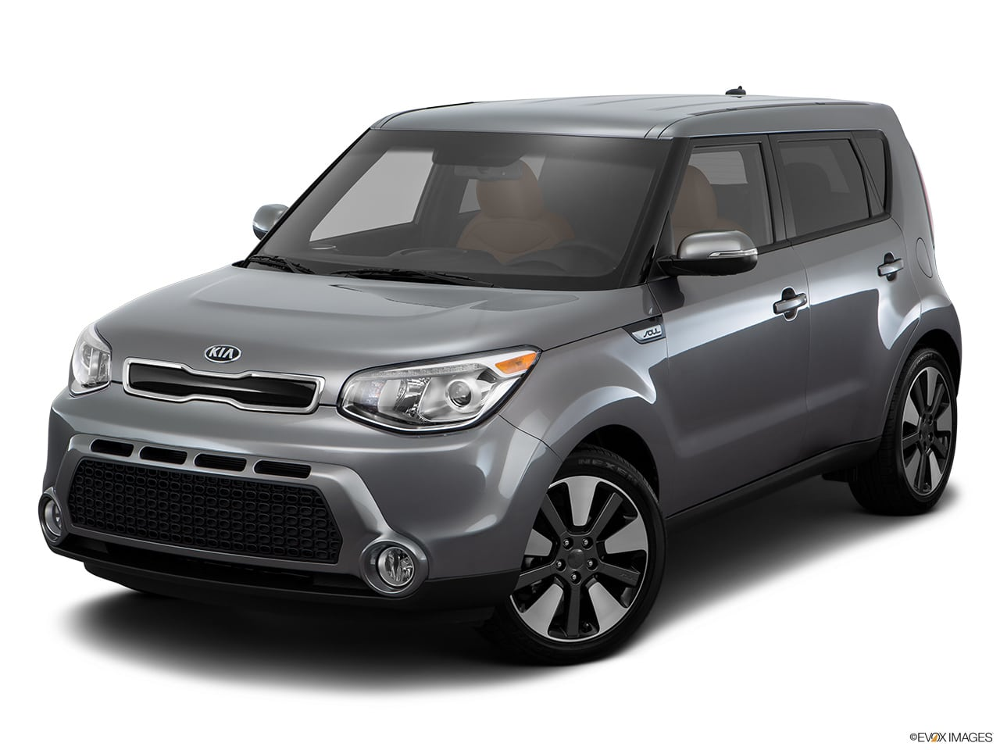
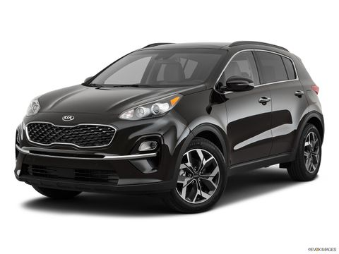
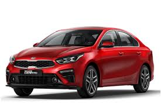
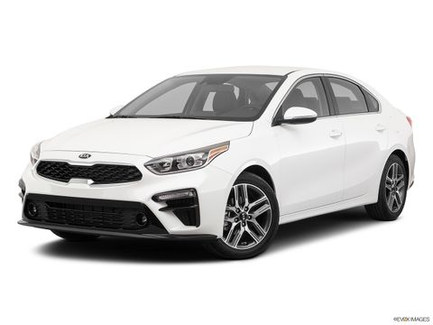

|  | بسعر يبدأ من 384,000 ج.م، تتنافس كيا سول مع منافسين معروفين ، تتوفر سيارة الكورية Small suv هذه في 2 نسخها ، حيث تباع أغلى نسخها بسعر 404,000 ج.م. يوفر سول لمشترين السيارة الجديدة 1.6-cc. تشتهر كيا سول بـقيمة المال، وتأتينا مزودة بميزات مثل: المصابيح الأمامية LED , ومقاعد قماش, ومدخل aux, وABS نظام الفرامل المانعة للإنغلاق |
|  | بسعر يبدأ من 429,900 ج.م، تتنافس كيا سبورتاج مع منافسين معروفين مثل هوندا سي أر-في، تتوفر سيارة الكورية Crossover هذه في 5 نسخها ، حيث تباع أغلى نسخها بسعر 544,900 ج.م. يوفر سبورتاج لمشترين السيارة الجديدة 1.6-cc. تشتهر كيا سبورتاج بـقيمة المال، وتأتينا مزودة بميزات مثل: مصابيح للضباب – أمامية و خلفية , وقفل مركزي, ومدخل aux, وABS نظام الفرامل المانعة للإنغلاق من هوندا سي أر-في والتي تباع بسعر 759,000 ج.م. |
|  | بسعر يبدأ من 299,900 ج.م، تتنافس كيا سيراتو مع منافسين معروفين مثل هيونداي إلانترا، تتوفر سيارة الكورية Sedan هذه في 4 نسخها ، حيث تباع أغلى نسخها بسعر 390,000 ج.م. يوفر سيراتو لمشترين السيارة الجديدة 1.6-cc. تشتهر كيا سيراتو بـقيمة المال، وتأتينا مزودة بميزات مثل: مصابيح أمامية أوتوماتيكية, ومسند للذراع في الوسط , ومقبس 12V - أمامي فقط, وABS نظام الفرامل المانعة للإنغلاق من هيونداي إلانترا والتي تباع بسعر 299,900 ج.م. |
|  | بسعر يبدأ من 299,900 ج.م، تتنافس كيا سيراتو مع منافسين معروفين مثل هيونداي إلانترا، تتوفر سيارة الكورية Sedan هذه في 4 نسخها ، حيث تباع أغلى نسخها بسعر 390,000 ج.م. يوفر سيراتو لمشترين السيارة الجديدة 1.6-cc. تشتهر كيا سيراتو بـقيمة المال، وتأتينا مزودة بميزات مثل: مصابيح أمامية أوتوماتيكية, ومسند للذراع في الوسط , ومقبس 12V - أمامي فقط, وABS نظام الفرامل المانعة للإنغلاق من هيونداي إلانترا والتي تباع بسعر 299,900 ج.م. |